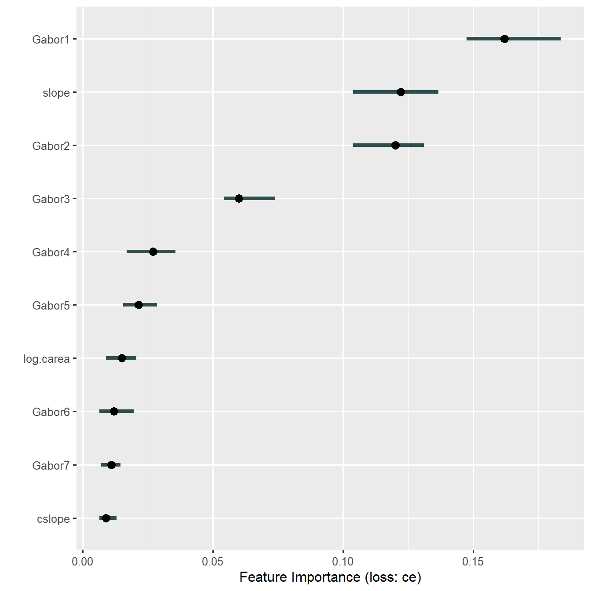
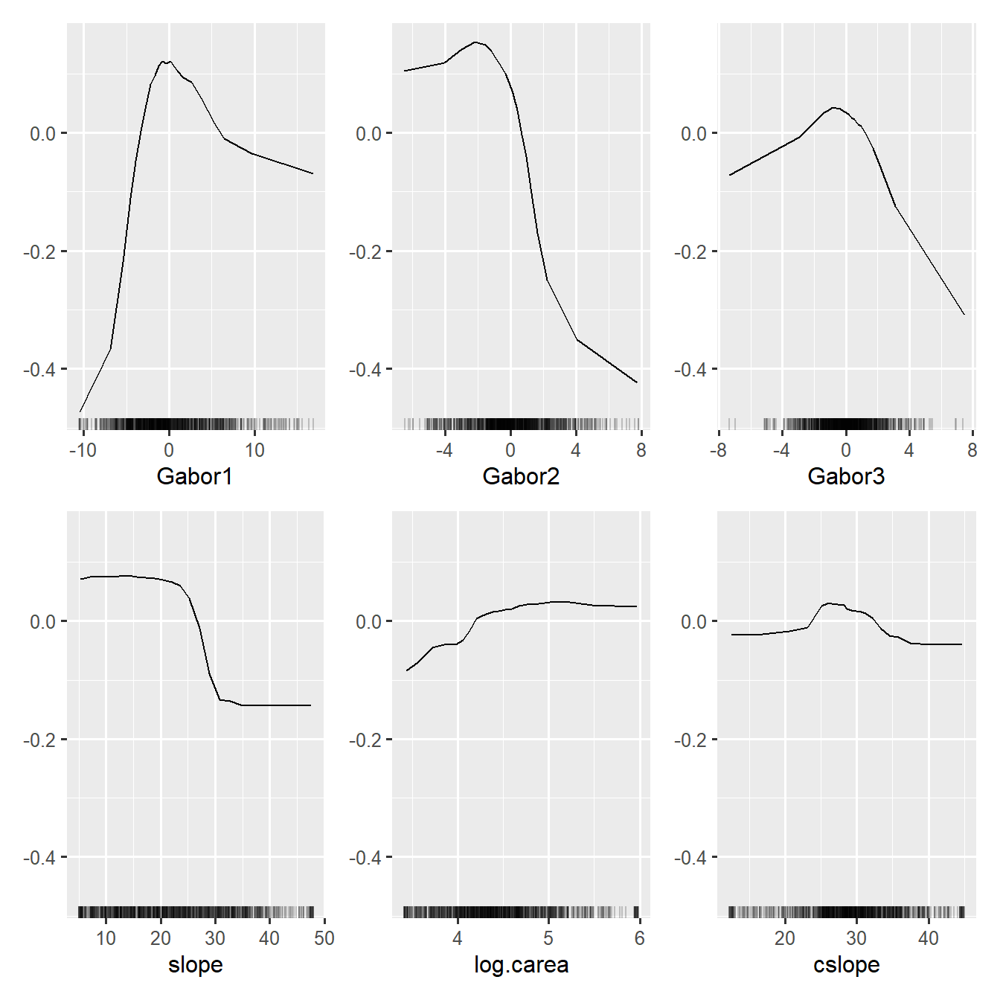

Main effects plots (such as partial dependence and ALE plots) can be confusing and even misleading when dealing with large numbers of highly correlated features. Example applications include land cover classification using multitemporal satellite remote-sensing data or texture features derived from such imagery. This package introduces a simple and pragmatic approach to dealing with this problem. This approach can be especially beneficial in situations where features tend to be linearly dependent, or in other words, where principal components analysis seems like a reasonable approach.
Preface
This vignette walks you through most of the analyses performed for the paper that introduces the novel model interpretation approach implemented in the wiml package. Please refer to that paper for conceptual and formal details, and cite it when using wiml or referring to the methods and results presented herein.
Brenning (2021) Transforming Feature Space to Interpret Machine Learning Models. arXiv preprint, arXiv:2104.04295, https://arxiv.org/abs/2104.04295
The wiml package serves as a thin wrapper around packages implementing ALE plots, partial dependence plots and other post-hoc model-agnostic interpretation tools. In this vignette, I will use iml; creating a vignette for use with DALEX is on my to-do list.
For an introduction to interpretable machine learning, see Molnar (2019), and for a broader overview, Murdoch et al. (2019). We are specifically dealing with the situation of post-hoc model-agnostic dataset-level tools for the interpretation of black-box machine-learning models.
Several of the following steps are computationally expensive and will be slow even on a workstation since the iml package, which does all the heavy lifting, does not seem to make full use of the parallel workers offered to it, at least not at the time of writing this document.
Getting started
Work environment
Make sure that all required packages and their dependencies are installed and up-to-date. wiml is currently only available via Github, so you will have to use devtools to install it; I also recommend using the most recent development version of iml.
In addition, you will need the packages stringr, purrr, ggcorrplot, ggfortify. Packages for parallelization are optional: future, future.callr. To parallelize computations, you can (optionally) use the following call, specifying the number of workers appropriate for your computing environment:
library("future")
library("future.callr")
future::plan("callr", workers = 4)
set.seed(444)
options(future.rng.onMisuse = "ignore")
Case study and data preparation
Land cover classification is a standard task in remote sensing, which often uses a large set of features (\(20\le p\le200\)) - for example, multitemporal spectral reflectances and derived vegetation indices and texture attributes, or even hyperspectral features. Many of these features are strongly correlated with each other, and they are often semantically grouped.
We will look at a rather challenging case study on the detection of rock glaciers in the Chilean Andes using the random forest classifier and a combination of 40 texture features and 6 terrain attributes. This is how a rock glacier looks like - it resembles a lava stream more than a glacier:
The texture features were generated by applying Gabor filters with varying bandwidth, anisotropy and aggregation settings to an IKONOS satellite image, resulting in strongly correlated features. This case study is described in more detail by Brenning, Long, and Fieguth (2012). We use a sample of 1000 points from this data set’s Laguna Negra area (500 presence and 500 absence locations).
Let’s get started by preparing the data set, which is shipped with the wiml package:
data(gabor, package = "wiml")
d <- gabor[gabor$area == "LN", ]
colnames(d) <- gsub("m30", "", colnames(d))
sel <- c(sample(which(d$class == "FALSE"), size = 500),
sample(which(d$class == "TRUE"), size = 500))
d <- d[sel,]
# Set up lists of features and model formulas:
gabor_vars <- stringr::str_subset(colnames(d), "e[12]g[1-5]")
terrain_vars <- c("dem", "slope", "pisr",
"cslope", "log.carea", "log.cheight")
yvar <- "class"
Xvars <- c(gabor_vars, terrain_vars)
# Formula for fitting the model with all features:
fo <- as.formula(paste(yvar, "~",
paste(Xvars, collapse = " + ")))
# Trim the tails of distributions to remove outliers:
d[, Xvars] <- d[, Xvars] %>%
purrr::map(DescTools::Winsorize, probs = c(0.02, 0.98)) %>%
as.data.frame()
# Scale only Gabor features:
d[, gabor_vars] <- scale(d[, gabor_vars])
Exploratory analysis
(Impatient readers: please skip this section.)
To show you how strongly the features are correlated, let’s take a look at this correlation matrix; note that the terrain attribute are the six features at the top:
ggcorrplot::ggcorrplot(cor(d[, Xvars]), type = "upper") +
ggplot2::theme_grey(base_size = 8)
To wrap our head around the information contained in the texture features, we take a look at a principal components analysis (PCA) - the following plot shows the weights of the (standardized) texture features in the first four principal components, which explain about 85% of the variance:
library("ggfortify")
ggplot2::autoplot(prcomp(d[, gabor_vars])$rotation[,1:4]) +
scale_fill_gradient2(low = "blue", high = "red", mid = "white",
midpoint = 0, limit = c(-.4,.4), space = "Lab",
name="Weight") +
ggplot2::theme_grey(base_size = 9)
Post-hoc interpretation, the traditional way
Before we apply the feature space transformation I propose in the paper, let’s start with a traditional post-hoc interpretation at the level of the original features. We will train a random forest model on our 46 features, and create accumulated local effects (ALE) plots as our preferred way of visualizing the main effects of features in our black-box model (Molnar 2019):
fit <- randomForest::randomForest(formula = fo, data = d, importance = TRUE)
simple_predictor <- Predictor$new(fit, data = d, y = yvar,
type = "prob", class = "TRUE")
simple_effs <- FeatureEffects$new(simple_predictor,
features = Xvars,
method = "ale")
Well that took some time… here’s finally our figure:
plot(simple_effs, ncols = 8)
Can you find a pattern? You’re probably totally lost because you don’t know what the texture feature names mean; but trust me, it doesn’t get much better if you know their meanings. How about showing this figure to a conference audience? Better don’t try…
The same thing happens if we look at permutation-based variable importances, which are also problematic due to the strong correlations. We’ll take a quick look using randomForest’s built-in method:
randomForest::varImpPlot(fit, n.var = 20, type = 1)
Model interpretation in transformed feature space
Now you may remember that many of the texture features are strongly correlated, and according to our domain knowledge, they are semantically related to each other as the features correspond to isotropic or anisotropic Gabor filters, wavelengths from 5 to 50 m, and four different aggregation schemes. We’d really like to think about decomposing their variance into… principal components!
The relationships between the texture features are in fact reasonably close to linear, and principal component analysis (PCA) is therefore an obvious choice for feature engineering. We may be tempted to retrain our model using the principal components (PCs) instead of the original features. Nevertheless, there are two reasons why I’m going down that road:
- Feature engineering, and PCA in particular, does not always improve model performance; it may in fact be harmful. (Spoiler: It’s not harmful in this case study.)
- More importantly, in post-hoc analyses, we are not normally able or allowed to retrain the model. The whole point of post-hoc methods is that they can be applied to trained models.
But how can we examine our model’s behaviour from a PCA perspective without retraining the model?
Here’s the trick: We’ll use an invertible transformation function as a pair of glasses that’ll allow us to inspect the model’s behaviour. The transformation function we’ll be using is a principal component transformation.
I’ll briefly outline the mathematical formalism, in case you’re interested. We’re dealing with a model
\[
\hat{f}:\mathbf{x}\in\mathbb{R}^p\mapsto\hat{f}(\mathbf{x})\in\mathbb{R}
\]
that was fitted to a training sample \(L\) in the (original, untransformed) \(p\)-dimensional feature space \(X\subset\mathbb{R}^p\), where the predicted values are probabilities or logits, in the case of classifiers. We’ll use an invertible transformation function
\[
\mathbf{T}: X \rightarrow W\subset\mathbb{R}^p,\quad \mathbf{w} = \mathbf{T}(\mathbf{x})
\]
that re-expresses the features in our dataset in a way that makes sense to us as domain scientists. PCA seems reasonable here, but other transformations can be considered (some thoughts on this in the paper).
The composition of the back transformation \(\mathbf{T}^{-1}\) and the trained model function \(\hat{f}\) now formally defines a model \(\hat{g}\) on \(W\),
\[
\hat{g} := \hat{f}\circ\mathbf{T}^{-1}
\]
which predicts the real-valued response based on ‘data’ in \(W\) although it was trained using a learning sample \(L\subset X\) in the untransformed feature space. So \(\mathbf{T}^{-1}\) is the ‘thin layer’ I was talking about - a set of glasses, or maybe in this case we should call it a ‘macroscope’ as we’re aggregating information into principal components. The function \(\hat{g}\) behaves exactly like a model trained on \(\mathbf{T}(L)\), both mathematically and computationally, and therefore we can fool any interpretation tool or R package by applying them to \(\hat{g}\) instead of \(\hat{f}\).
Note that the PCs are linearly independent, and therefore we also overcome the issue we had with permutation variable importances calculated from strongly correlated features.
Before we continue, there’s still one pitfall to avoid: If we apply PCA to all features, we will ‘mix’ information from the texture and terrain features, although they are weakly correlated and semantically completely different. We will therefore use a transformation that does PCA on the texture features, and nothing (i.e. an identity transformation) on the terrain attributes. (This is achieved by creating a rotation matrix that is composed of two block matrices.)
By the way, wiml also allows us to perform (truely) structured PCAs, i.e. seperate PCAs on subsets of features. This would be useful here if the terrain attributes were strongly correlated, which is not the case.
Interpretation using structured PCA
So let’s define a structured transformation function \(\mathbf{T}\) that PCA-transforms the 40 texture feature, but leaves the terrain attributes untouched.
The wiml package refers to transformation functions as warpers, just because it sounds cool.
# List for structured PCA:
wrp <- pca_warper(d, xvars = gabor_vars, yvar = yvar,
uvars = terrain_vars, wvars = "Gabor")
This is an object of class warper, which in this case is built around a prcomp object. Its plot method provides some insights into the PCA - we’ve seen enough of that in the exploratory analysis.
So now we’ve got our transformation function \(\mathbf{T}\), which can be applied to a dataset by using the warp method, and whose inverse is given by the inverse of its rotation matrix and implemented in the unwarp method.
We now have to wrap our transformation around the trained model, i.e. create the composition \(\hat{f}\circ\mathbf{T}^{-1}\):
wfit <- warp_fitted_model(fit, warper = wrp)
This doesn’t really ‘do’ anything - it simply creates an object of class warped_model, which is equipped with a predict method. This method accepts inputs in transformed feature space, i.e. texture PCs and (unchanged) terrain attributes, and then feeds our trained model fit (or \(\hat{f}\)) with back tranformed features in the original feature space. Let’s try that out:
Permutation variable importance
As you can see, our small sample of four points actually consisted of PC data (features Gabor1 etc.), and wfit behaves like a model that was fitted on PC-transformed data.
This means that we’re ready to fool any model-agnostic interpretation tool - just don’t tell’em that ‘wfit’ is not a real model!
Permutation variable importance
We’ll start with the permutation variable importance:
imp_wpredictor <- Predictor$new(wfit,
data = warp(d, warper = wrp),
y = yvar, type = "response")
imp <- FeatureImp$new(imp_wpredictor,
loss = "ce", compare = "difference",
n.repetitions = 50)
I’ll spare you this messy plot, let’s focus on the top 10 features (At the time of writing this document, the features argument was only available in the development version of iml):
imp10 <- FeatureImp$new(imp_wpredictor,
loss = "ce", compare = "difference",
features = imp$results$feature[1:10],
n.repetitions = 50)
ggplot2::theme_set(theme_grey(base_size = 12)) # back to normal
plot(imp10)

So, the first two principal components of Gabor texture features are indeed important. Gabor1 is essentially the mean value across all texture features - an overall measure of stripedness - which underlines that we’re doing the right thing when applying Gabor filters. This, and the information we gain from PCs #2 and #3, weren’t visible at all in the original variable importance plot above.
Also note that permutation on the untransformed feature resulting in a lot of extrapolation beyond the data-supported region due to the strong correlations between features. This is not the case here any more - the PCs are uncorrelated!
Main effects: ALE plots
Next, we want to display accumulated local effects (ALE) plots as our preferred way of visualizing main effects of features in our black-box model (Molnar 2019):
top3_terrain_vars <- stringr::str_subset(
imp$results$feature, "Gabor", negate = TRUE)[1:3]
wfeatures <- c("Gabor1", "Gabor2", "Gabor3",
top3_terrain_vars)
wpredictor <- Predictor$new(
wfit, data = warp(d, warper = wrp),
y = yvar, type = "prob", class = "TRUE"
)
weffs <- FeatureEffects$new(wpredictor, features = wfeatures)
plot(weffs)

This is much tidier than the 46 ALE plots shown earlier, and domain experts are perfectly able to explain this to an educated audience.
What about interactions? In untransformed feature space, it would be absolutely impossible to look at all the \(p(p-1)/2\) pairwise interactions. In transformed PC space, in contrast, we can focus on the first PCs, and here I will show only the interaction of the first two PCs:
weffs_2d_pdp <- FeatureEffect$new(
wpredictor, feature = c("Gabor1", "Gabor2"),
method = "pdp", grid.size = c(20, 20))
plot(weffs_2d_pdp)
References
Brenning, A. 2021.
“Transforming Feature Space to Interpret Machine Learning Models.” http://arxiv.org/abs/2104.04295.
Brenning, A., S. Long, and P. Fieguth. 2012.
“Detecting Rock Glacier Flow Structures Using Gabor Filters and IKONOS Imagery.” Remote Sensing of Environment 125: 227–37.
https://doi.org/10.1016/j.rse.2012.07.005.
Molnar, C. 2019. Interpretable Machine Learning: A Guide for Making Black Box Models Explainable.
Murdoch, W. J., C. Singh, K. Kumbier, R. Abbasi-Asl, and B. Yu. 2019.
“Definitions, Methods, and Applications in Interpretable Machine Learning.” Proceedings of the National Academy of Sciences 116 (44): 22071–80.
https://doi.org/10.1073/pnas.1900654116.